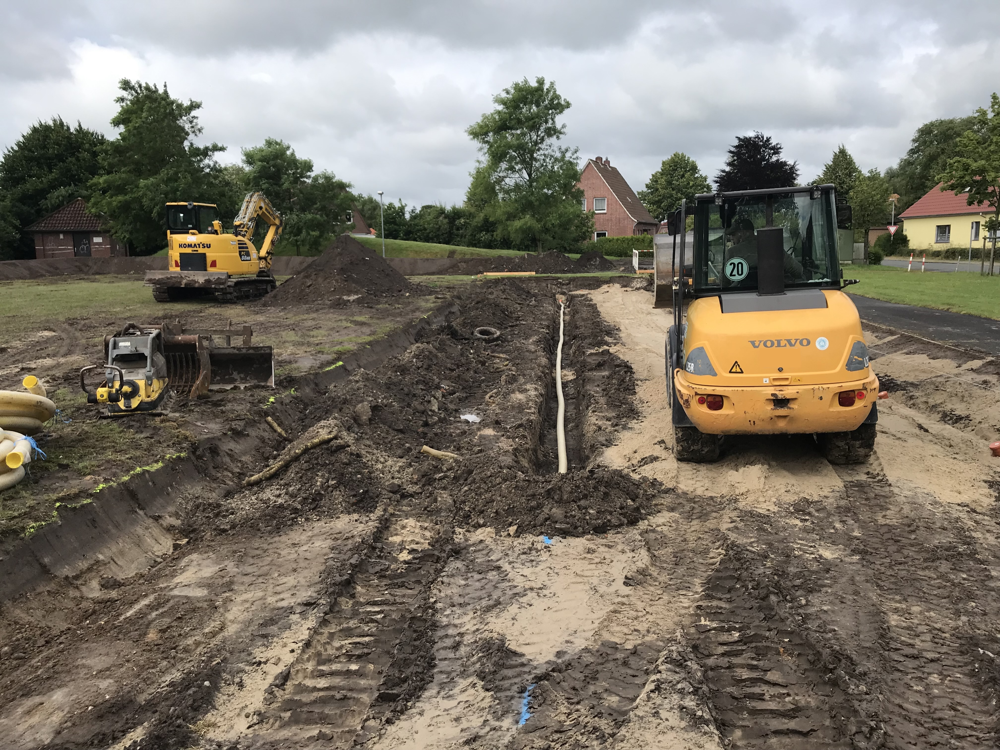
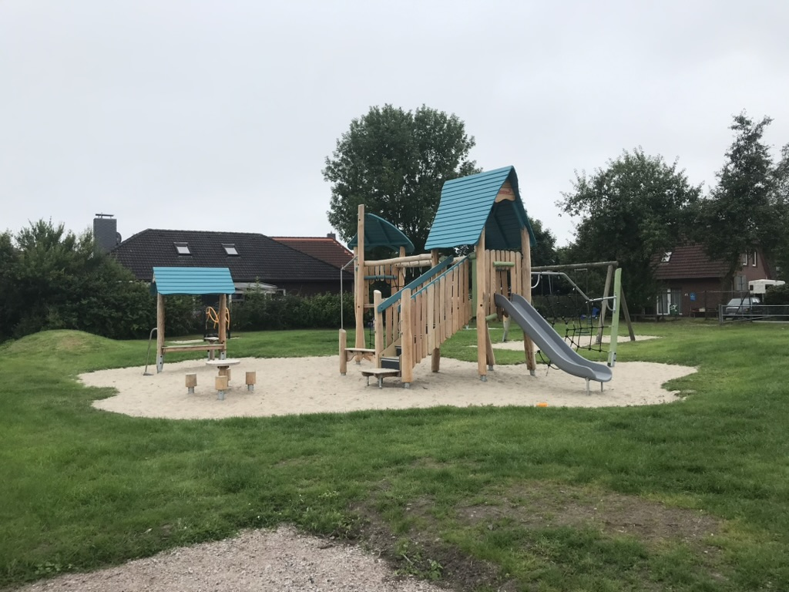
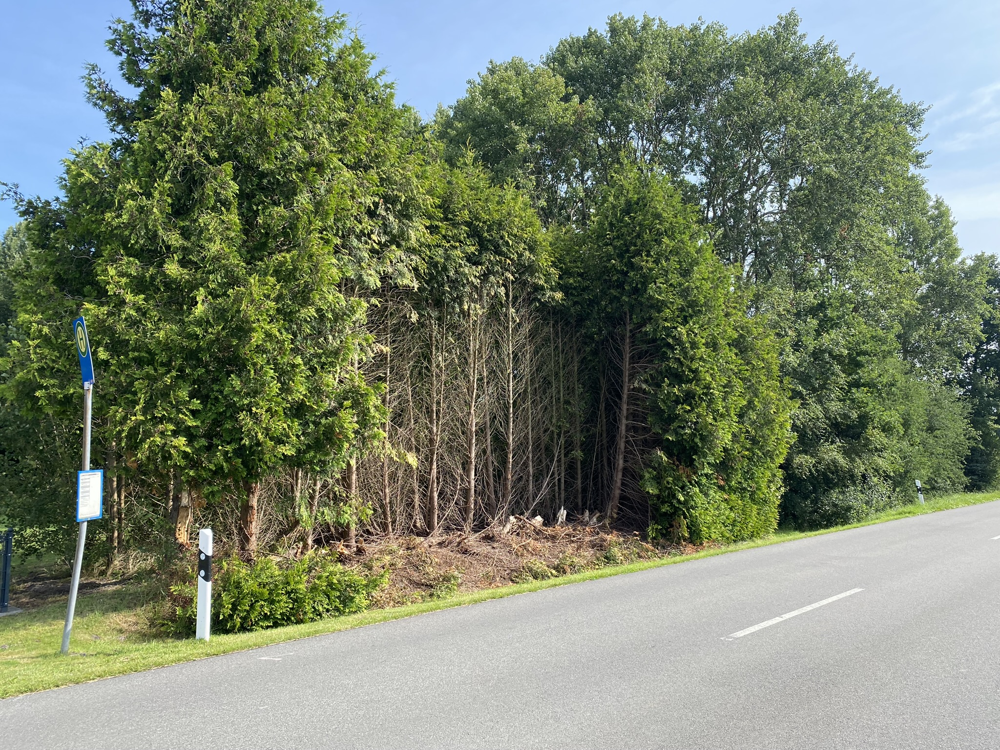

Willkommen
Als unabhängiger Gutachter erstelle ich fundierte Bewertungen und Dokumentationen für verschiedene Bereiche der Außenanlagen- und Schadensbewertung. Ziel ist immer eine klare, nachvollziehbare und rechtssichere Entscheidungsgrundlage.
Leistungen

Schadensgutachten
Bewertung und Dokumentation von Schäden für Versicherungen und Kommunen.

Spielplatzprüfung
Prüfungen nach DIN EN 1176 inklusive vollständiger Dokumentation.

Wertermittlung
Ermittlung von Werten für Außenanlagen, Bäume und Grünstrukturen.
Warum Gutachten von mir?
Ich arbeite unabhängig, nachvollziehbar und praxisnah. Gutachten sind nicht nur Dokumente, sondern Entscheidungsgrundlagen – genau darauf lege ich Wert.
Besonders im kommunalen Bereich ist eine klare, rechtssichere Dokumentation entscheidend, um Haftungsrisiken zu vermeiden.
Sie benötigen ein Gutachten?
Ich berate Sie kurzfristig und zuverlässig.
Anfrage senden